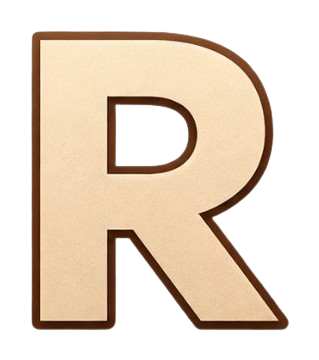
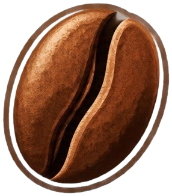
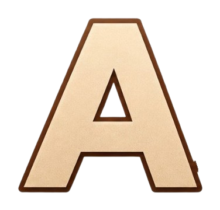
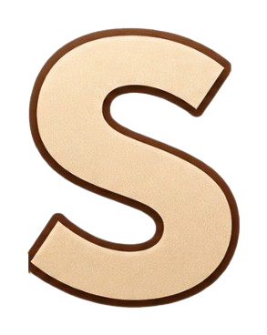
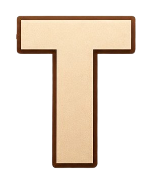

Modos de juego
ROAST cuenta con dos modos diseñados para aprender y poner a prueba tus conocimientos sobre el tueste de café. Elige entre Pregunta, para reforzar tus conocimientos, o Desafío, para poner a prueba tus habilidades dentro del simulador.





Simulador de tueste de café
Cargando 0%
Elige tu modo de juego
ROAST es un simulador interactivo de tueste de café diseñado para apoyar el aprendizaje y la práctica del proceso de tostión. La herramienta permite al usuario experimentar de manera controlada con diferentes variables del tueste, como el tiempo y la temperatura, sin necesidad de utilizar café físico durante las etapas iniciales de aprendizaje. De esta manera, ROAST busca reducir las pérdidas de materia prima ocasionadas por errores durante la práctica y facilitar una mejor comprensión de cómo las decisiones tomadas durante el proceso influyen en el resultado final del café. Además, el sistema integra preguntas y actividades prácticas que permiten reforzar los conocimientos adquiridos y desarrollar una mayor familiaridad con el proceso de tueste.
ROAST cuenta con dos modos diseñados para aprender y poner a prueba tus conocimientos sobre el tueste de café. Elige entre Pregunta, para reforzar tus conocimientos, o Desafío, para poner a prueba tus habilidades dentro del simulador.
Pon a prueba tus conocimientos sobre el café y el proceso de tueste mediante preguntas relacionadas con temperatura, tiempo, tipos de tueste, características del grano y otros conceptos importantes.
Enfréntate a una tarea aleatoria dentro del simulador y demuestra tus habilidades de tueste. Elige entre tres niveles de dificultad: fácil, medio y difícil, y cumple correctamente las condiciones del desafío para superarlo.